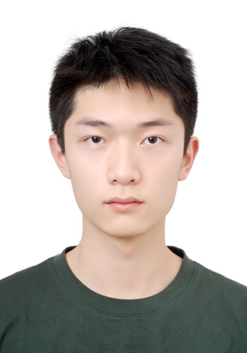

|
Yuheng Wu
I'm Yuheng Wu, an M.S. student in Electrical Engineering at
Stanford University, advised by
Thierry Tambe.
I'm also fortunate to collaborate with
Alex Aiken,
Azalia Mirhoseini, and
Sanmi Koyejo.
Before joining Stanford, I received my B.E. in Electronic Information Engineering from
Wuhan University.
My research centers on Large Language Models (LLMs), with a focus on
reasoning, test-time methods, verification, formal methods,
and hardware-software co-design.
Email /
CV /
Scholar /
Github
|

|
Research
-
-
-
-
SATBench: Benchmarking LLMs' Logical Reasoning via Automated Puzzle Generation from SAT Formulas
Anjiang Wei*, Yuheng Wu*, Yingjia Wan, Tarun Suresh, Huanmi Tan, Zhanke Zhou, Sanmi Koyejo, Ke Wang, Alex Aiken
in Proceedings of the Conference on Empirical Methods in Natural Language Processing
EMNLP 2025, Suzhou, China, November 2025
code / dataset / website
-
CodeARC: Benchmarking Reasoning Capabilities of LLM Agents for Inductive Program Synthesis
Anjiang Wei, Tarun Suresh, Jiannan Cao, Naveen Kannan, Yuheng Wu, Kai Yan, Thiago S. F. X. Teixeira, Ke Wang, Alex Aiken
in Proceedings of the Conference on Language Modeling
COLM 2025, Montreal, Canada, October 2025
code / dataset / website
-
-
|
Service
Reviewer: CVPR 2026, ICLR 2026, NeurIPS 2025, IEEE Transactions on Image Processing,
Journal of Artificial Intelligence Research,
IEEE Transactions on Neural Networks and Learning Systems, Pattern Recognition
|
Miscellanea
I enjoy playing tennis and watching films. Some of my favorite films include:
(Click titles with links for more information.)
- Blow-Up by Michelangelo Antonioni
- Week-End by Jean-Luc Godard
- Tropical Malady by Apichatpong Weerasethakul
- Zama by Lucrecia Martel
- Meek’s Cutoff by Kelly Reichardt
- The Chronicle of Anna Magdalena Bach by Danièle Huillet and Jean-Marie Straub
- Pacifiction by Albert Serra
- Trenque Lauquen by Laura Citarella
- Cyclo by Tran Anh Hung
- Goodbye, Dragon Inn by Tsai Ming-Liang
|
|
Template taken from Jon Barron.
|
|
{kind=link}